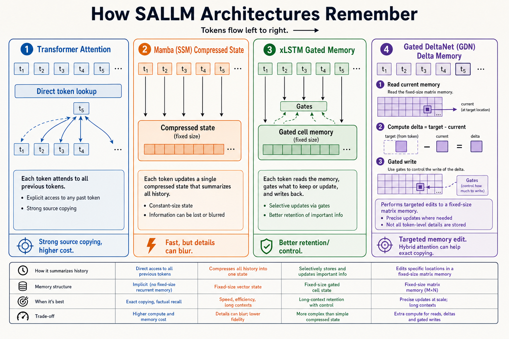

Keeps token-level access
Attention can look back at individual prior tokens. Strong for copying names, numbers, entities, and exact source facts.
A SALLM lesson for understanding why we are testing hybrid recurrent memory against LLaMA, Mamba, and xLSTM. The whole question: what does the model remember, and can it preserve source details?

Attention can look back at individual prior tokens. Strong for copying names, numbers, entities, and exact source facts.
Efficient recurrence writes the past into a compact state. Great idea, but exact source preservation can blur.
Recurrent memory with stronger gates. In our diagnostics, useful task representations survived better than Mamba.
Reads what a key already recalls, subtracts the error, then writes the update. Hybrid layers add attention back in.
The state is compact. New information mixes into old information. Efficient, but exact values can blur under high source-preservation pressure.
Do not ask only “which loss is lower?”
Ask whether the model can preserve source entities, values, and relations after adaptation.
Hybrid GDN is the fair test.
The local config keeps periodic full-attention layers because pure fixed-state recurrence is risky for copying.
xLSTM evidence matters.
If xLSTM works with task heads but fails generative adapters, the story is about decoding/adaptation, not dead representations.